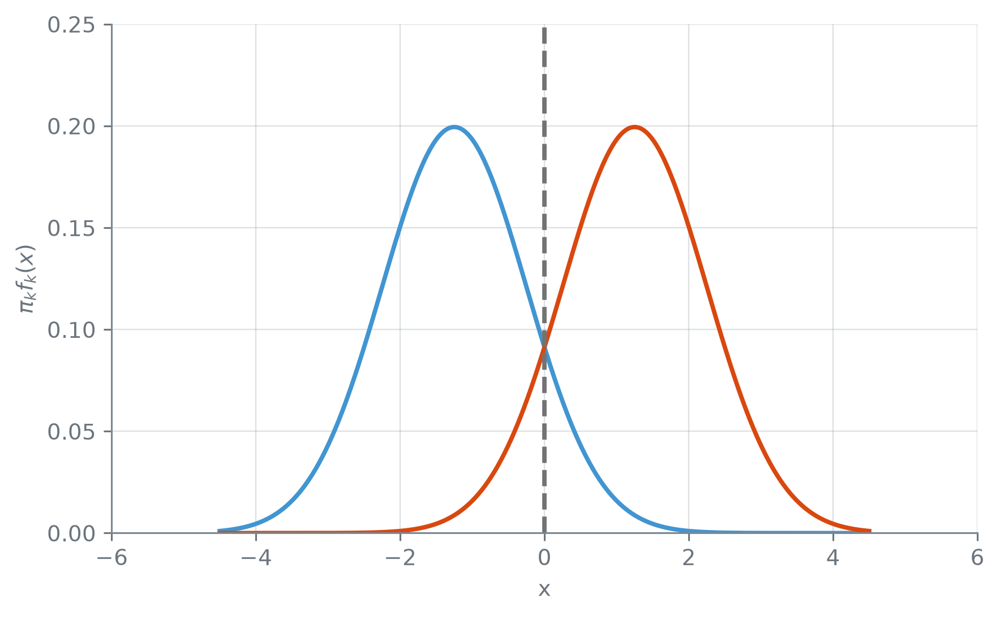

br = lambda v, casas=2: (
f"{v:,.{casas}f}"
.replace(",", "_")
.replace(".", ",")
.replace("_", ".")
.replace("-", "−")
)Leitura Complementar: LDA e QDA
Nota
Esta seção corresponde às seções 4.4.1, 4.4.2, 4.4.3 e 4.5.1 de James et al. (2023).
Um modelo generativo classifica pelo teorema de Bayes,
\[ \Pr(Y = k \mid X = x) = \frac{\pi_k f_k(x)} {\sum_{l=1}^{K} \pi_l f_l(x)}, \]
e a dificuldade está toda em estimar a densidade \(f_k(x)\) de \(X\) dentro de cada classe. O Naive Bayes da seção 9.4 resolve isso supondo os preditores independentes dentro da classe. Há outro caminho: supor que, dentro de cada classe, \(X\) segue uma normal multivariada, a versão com várias coordenadas da curva em forma de sino. Essa forma descreve a associação entre os preditores com poucos números, as médias, as variâncias e as covariâncias, e é dela que saem dois classificadores, a análise discriminante linear (LDA, do inglês linear discriminant analysis) e a análise discriminante quadrática (QDA).
A função br escreve os números com a pontuação brasileira:
LDA com um preditor
Se \(X\) tem, dentro de cada classe, a forma de sino da normal, com o mesmo espalhamento nas duas classes e só o centro mudando, onde fica a fronteira entre elas?
Com um preditor só, a LDA supõe que, dentro de cada classe \(k\), \(X\) segue uma normal com média \(\mu_k\) própria da classe e uma variância \(\sigma^2\) comum a todas as classes. Levando essa densidade ao teorema de Bayes e tomando o log, a classe escolhida é a que maximiza
\[ \delta_k(x) = x \cdot \frac{\mu_k}{\sigma^2} - \frac{\mu_k^2}{2\sigma^2} + \log \pi_k. \]
Cada \(\delta_k(x)\) é uma reta em \(x\): inclinação \(\mu_k / \sigma^2\), que cresce com a média da classe, mais um termo que só depende da classe. O ponto em que duas dessas retas se cruzam é a fronteira entre as duas classes. Com duas classes igualmente prováveis, é o ponto em que as duas densidades se cruzam:
import matplotlib.pyplot as plt
import numpy as np
def normal(x, media, var):
d2 = (x - media) ** 2
raiz = np.sqrt(
2 * np.pi * var)
return np.exp(
-d2 / (2 * var)) / raiz
grade = np.linspace(
-4.5, 4.5, 400)
medias = {"C0": -1.25, "C1": 1.25}
fronteira = sum(
medias.values()) / 2
fig, ax = plt.subplots()
for cor, mu in medias.items():
dens = normal(grade, mu, 1.0)
ax.plot(grade, 0.5 * dens,
color=cor)
ax.axvline(fronteira,
color="0.45",
linestyle="--")
ax.set_ylim(bottom=0)
ax.set_xlabel("x")
ax.set_ylabel(r"$\pi_k f_k(x)$")
plt.tight_layout()
plt.show()
Com a variância comum e as duas classes igualmente prováveis, os dois sinos têm a mesma largura e a mesma altura, e a fronteira fica no meio do caminho entre as duas médias. É uma fronteira de um ponto só, a versão com um preditor de uma reta.
A figura usa \(\mu_k\), \(\sigma^2\) e \(\pi_k\) verdadeiros, e por isso a linha tracejada é a fronteira de Bayes. A LDA não conhece esses valores: faz a mesma conta com a média de cada classe no treino, a variância combinada das classes e a fração de cada classe no treino, e a fronteira que ela acha é uma estimativa desta.
LDA com \(p\) preditores
Com \(p\) preditores, não é preciso acompanhar a álgebra matricial para ler o que importa. A média \(\mu_k\) vira um vetor de \(p\) médias, e a variância vira uma matriz de covariância \(\Sigma\), uma tabela \(p \times p\) com a variância de cada preditor na diagonal e a covariância de cada par fora dela. A regra tem a mesma forma do caso de um preditor, com a divisão por \(\sigma^2\) trocada pela inversa de \(\Sigma\):
\[ \begin{aligned} \delta_k(x) = {} & x^T \Sigma^{-1} \mu_k \\ & - \tfrac{1}{2} \mu_k^T \Sigma^{-1} \mu_k + \log \pi_k. \end{aligned} \]
Cada \(\delta_k(x)\) continua sendo um número, uma soma de termos lineares em \(x_1, \ldots, x_p\), e a classe escolhida é a de maior \(\delta_k(x)\).
Com uma covariância só, o termo quadrático em \(x\) que apareceria ao expandir a distância de \(x\) até cada \(\mu_k\) é o mesmo em toda classe, e cancela ao comparar \(\delta_k(x)\) com \(\delta_l(x)\). Sobra apenas uma combinação linear de \(x\), e é daí que sai a fronteira linear que dá nome ao método.
QDA: uma covariância por classe
Nem sempre as classes têm o mesmo espalhamento: uma nuvem pode ser alongada numa direção, e a outra, em outra. A QDA solta a suposição mais forte da LDA: cada classe passa a ter a sua própria matriz de covariância, \(\Sigma_k\). A classe escolhida passa a maximizar
\[ \begin{aligned} \delta_k(x) = {} & -\tfrac{1}{2}(x-\mu_k)^T \Sigma_k^{-1} (x-\mu_k) \\ & - \tfrac{1}{2}\log|\Sigma_k| + \log \pi_k. \end{aligned} \]
O termo \(\log|\Sigma_k|\) é o log do determinante de \(\Sigma_k\), um número que mede o volume da nuvem da classe; ele sai da constante da densidade normal e, com uma covariância comum, seria igual em todas as classes. Sem uma covariância comum, o termo quadrático em \(x\) não cancela mais entre as classes, porque agora carrega o índice \(k\). Sobra uma função quadrática de \(x\), e a fronteira se curva.
A liberdade custa parâmetros: cada matriz de covariância com \(p\) preditores tem \(p(p+1)/2\) entradas livres a estimar, uma variância para cada preditor e uma covariância para cada par de preditores distintos. A LDA estima uma só; a QDA, uma por classe. Com os três preditores do Default (saldo, renda e o indicador de estudante) e as duas classes de inadimplência:
p, K = 3, 2
lda_par = p * (p + 1) // 2
qda_par = K * lda_par
print("covariância, LDA:",
lda_par)
print("covariância, QDA:",
qda_par)
print("por classe, p = 10:",
10 * 11 // 2)covariância, LDA: 6
covariância, QDA: 12
por classe, p = 10: 55A LDA estima 6 parâmetros de covariância, e a QDA, 12. A conta cresce depressa com \(p\): com 10 preditores, seriam 55 por classe. O Naive Bayes com normais, que supõe os preditores independentes dentro da classe, estima só as \(p\) variâncias, sem nenhuma covariância.
E se a classe tem menos observações que preditores, a matriz de covariância estimada nem chega a ter inversa, e a densidade normal com todos os preditores juntos não pode ser calculada. Com 50 preditores e 30 observações:
rng = np.random.default_rng(7)
amostra = rng.normal(
size=(30, 50))
cov = np.cov(amostra,
rowvar=False)
posto = np.linalg.matrix_rank(cov)
print("tamanho da matriz:",
cov.shape)
print("posto:", posto)
print("tem inversa:",
bool(posto == 50))
diag = np.diag(cov)
print("variâncias > 0:",
bool((diag > 0).all()))tamanho da matriz: (50, 50)
posto: 29
tem inversa: False
variâncias > 0: Truenp.cov(dados, rowvar=False): a matriz de covariância das colunas de dados. np.linalg.matrix_rank(M): o posto de M, o número de direções independentes que ela tem; uma matriz \(p \times p\) só tem inversa com posto \(p\). np.diag(M): a diagonal de M, aqui as 50 variâncias.
Com 30 observações, a matriz de covariância de 50 preditores tem posto 29 e não tem inversa; LDA e QDA, que precisam dela, não se calculam. As 50 variâncias da diagonal, que são tudo o que o Naive Bayes com normais usa, são todas positivas. É o caso em que a hipótese de independência mais compensa: \(p\) grande diante de \(n\), em que a distribuição conjunta não se estima.
É a mesma troca que a seção 7.3 descreveu entre um ajuste paramétrico rígido e um mais livre, agora dentro da família normal. A LDA, com menos parâmetros, pede menos dado e trava a fronteira numa reta; a QDA precisa de mais dado para estimar uma covariância por classe, e em troca a fronteira pode se curvar. A forma rígida da LDA tem menos variância e só carrega viés quando as classes não compartilham a covariância; a QDA não carrega esse viés, mas paga em variância.
Uma suposição que acerta, e uma que erra
A suposição da LDA, uma covariância só, acerta quando as classes de fato compartilham a forma da nuvem de pontos, e erra quando não compartilham. Quanto custa cada caso? Num dado simulado, quem gera o dado escolhe a covariância verdadeira de cada classe, e os dois casos se comparam lado a lado: duas classes com a mesma covariância num cenário, com covariâncias diferentes no outro. Um sorteio de treino só não decide a questão, porque num único sorteio pequeno a diferença entre LDA e QDA é tanto ruído quanto sinal. O que decide é repetir o sorteio muitas vezes contra o mesmo conjunto de teste.
from sklearn import (
discriminant_analysis as da)
LDA = (da.
LinearDiscriminantAnalysis)
QDA = (da.
QuadraticDiscriminantAnalysis)
rng = np.random.default_rng(9)
mu_azul = np.array([-1.5, -1.5])
mu_lar = np.array([1.5, 1.5])
cov_comum = np.array(
[[1.0, 0.7], [0.7, 1.0]])
cov_dif = np.array(
[[1.0, -0.7], [-0.7, 1.0]])
cenarios = {
"comum":
(cov_comum, cov_comum),
"diferente":
(cov_comum, cov_dif),
}
def gera(covs, n, rng):
normal_mv = (
rng.multivariate_normal)
azul = normal_mv(
mu_azul, covs[0], size=n)
lar = normal_mv(
mu_lar, covs[1], size=n)
X_g = np.vstack([azul, lar])
y_g = np.r_[np.zeros(n),
np.ones(n)]
return X_g, y_g
# Um teste grande e FIXO por
# cenário, sorteado uma vez.
teste = {c: gera(v, 20000, rng)
for c, v in cenarios.items()}
n_rep = 200
erros = {(c, m): np.empty(n_rep)
for c in cenarios
for m in ["LDA", "QDA"]}
metodos = {"LDA": LDA,
"QDA": QDA}
for i in range(n_rep):
treinos = {c: gera(v, 30, rng)
for c, v in
cenarios.items()}
for c in cenarios:
Xt, yt = treinos[c]
Xs, ys = teste[c]
for m in metodos:
mod = metodos[m]()
mod.fit(Xt, yt)
ac = mod.score(Xs, ys)
e = erros[c, m]
e[i] = 1 - ac
for c in cenarios:
e_l = erros[c, "LDA"]
e_q = erros[c, "QDA"]
print(f"{c}:")
print(" erro LDA:",
br(100 * e_l.mean()), "%")
print(" erro QDA:",
br(100 * e_q.mean()), "%")
vence = (e_l < e_q).mean()
print(" LDA erra menos:",
br(100 * vence, 1), "%")comum:
erro LDA: 5,56 %
erro QDA: 5,72 %
LDA erra menos: 73,5 %
diferente:
erro LDA: 2,66 %
erro QDA: 1,05 %
LDA erra menos: 1,0 %LinearDiscriminantAnalysis().fit(X, y) e QuadraticDiscriminantAnalysis().fit(X, y), do módulo sklearn.discriminant_analysis: ajustam LDA e QDA, estimando \(\pi_k\), \(\mu_k\) e a covariância (uma só ou uma por classe) a partir do treino. O módulo entra com o nome curto da, e as atribuições LDA = da.LinearDiscriminantAnalysis e QDA = da.QuadraticDiscriminantAnalysis dão a cada classe um nome curto.
O sorteio de treino se repete 200 vezes, sempre com 30 pontos por classe, contra o mesmo conjunto de teste de 20.000 pontos por classe em cada cenário. Com a covariância comum, a LDA erra em média 5,56% contra 5,72% da QDA, e erra menos em 73,5% dos 200 sorteios, uma vantagem sistemática mas modesta.
Com covariâncias diferentes, a LDA erra em média 2,66% contra 1,05% da QDA, e erra menos em só 1,0% dos sorteios. Neste cenário, com dois preditores e 30 pontos por classe, a suposição da LDA compensa pouco quando vale, e custa caro quando não vale.
O quadro não é geral. A QDA estima uma covariância inteira por classe, e o número de parâmetros cresce com \(p(p+1)/2\): com muitos preditores e pouco dado, a variância da QDA pesa mais, e aí é a LDA que leva vantagem sempre que a suposição dela está perto de valer. Com dois preditores, essa conta ainda é pequena.
Com um treino bem maior, 1.000 pontos por classe em vez de 30, as fronteiras ajustadas ficam perto da verdade em vez de perto do ruído de uma amostra pequena. É essa fronteira que a figura a seguir desenha, ao lado da fronteira de Bayes: a fronteira ótima, que sai direto das densidades normais verdadeiras que geraram o dado, sem ajustar modelo nenhum. Como as duas classes são igualmente prováveis, o termo \(\log \pi_k\) é o mesmo nas duas e cancela, e a fronteira de Bayes fica onde as duas densidades se igualam.
from matplotlib.lines import (
Line2D)
def log_normal(pts, mu, cov):
d = pts - mu
inv = np.linalg.inv(cov)
quad = np.einsum(
"ij,jk,ik->i", d, inv, d)
log_det = np.log(
np.linalg.det(cov))
cte = 2 * np.log(2 * np.pi)
return -0.5 * (
cte + log_det + quad)
g = np.linspace(-4.5, 4.5, 300)
mx, my = np.meshgrid(g, g)
pts = np.column_stack(
[mx.ravel(), my.ravel()])
forma = mx.shape
fig, eixos = plt.subplots(
2, 1, figsize=(6.4, 11),
sharex=True)
titulos = {
"comum": "mesma covariância",
"diferente":
"covariâncias diferentes"}
for ax, (c, covs) in zip(
eixos, cenarios.items()):
Xf, yf = gera(covs, 1000, rng)
lda = LDA().fit(Xf, yf)
qda = QDA().fit(Xf, yf)
bayes = (
log_normal(pts, mu_azul,
covs[0])
- log_normal(pts, mu_lar,
covs[1])
).reshape(forma)
for k in [0, 1]:
ax.scatter(*Xf[yf == k].T,
color=f"C{k}", s=6,
zorder=3)
ax.contour(mx, my, bayes,
levels=[0],
colors="0.45",
linestyles="dotted",
linewidths=2.0,
zorder=4)
ajustes = [
(lda, "C2", "solid"),
(qda, "C3", "dashed")]
for mod, cor, tr in ajustes:
prev = mod.predict(pts)
ax.contour(mx, my,
prev.reshape(forma),
levels=[0.5],
colors=cor,
linestyles=tr)
ax.set_title(titulos[c])
ax.set_ylabel("x2")
eixos[1].set_xlabel("x1")
marcas = [
Line2D([], [], marker="o",
linestyle="None",
color="C0",
label="classe azul"),
Line2D([], [], marker="o",
linestyle="None",
color="C1",
label="classe laranja"),
Line2D([], [], color="0.45",
linestyle=":", label=
"fronteira de Bayes"),
Line2D([], [], color="C2",
label="fronteira LDA"),
Line2D([], [], color="C3",
linestyle="--",
label="fronteira QDA"),
]
fig.legend(handles=marcas,
loc="lower center", ncols=2,
bbox_to_anchor=(0.5, -0.08),
frameon=False)
plt.tight_layout()
plt.show()![Dois painéis empilhados com uma nuvem azul embaixo à esquerda e uma laranja em cima à direita. Em cima, as fronteiras de Bayes e da LDA são quase a mesma reta diagonal entre as nuvens, e a da QDA acompanha essa reta no meio mas se afasta dela nas pontas, sobretudo à esquerda, onde se curva para cima e fica longe da diagonal, numa região sem pontos. Embaixo, a fronteira de Bayes e a da QDA quase coincidem: contornam o canto superior direito da nuvem azul e têm um segundo trecho curto no canto de cima à direita; a da LDA segue reta e atravessa a nuvem azul, deixando uma faixa de pontos azuis do lado laranja.](07-leitura-complementar-lda-e-qda_files/figure-html/fig-fronteiras-lda-qda-output-1.png)
ax.contour(x, y, z, levels=[0]): com um nível só, desenha a curva em que z vale exatamente 0. Aqui, z é a diferença entre as log-densidades das duas classes (a fronteira de Bayes) ou a classe prevista em cada ponto da grade (com levels=[0.5], a fronteira ajustada).
np.linalg.inv(M) dá a inversa de M, e np.linalg.det(M), o determinante, que entra no termo \(\log|\Sigma_k|\) da densidade normal. np.einsum("ij,jk,ik->i", d, M, d) calcula, para cada linha \(d_i\) de d, o número \(d_i^T M d_i\), a parte quadrática da densidade normal.
A fronteira de Bayes serve de régua para julgar as outras duas. No painel de covariância comum, ela é reta, porque as duas classes de fato compartilham \(\Sigma\), e a fronteira da LDA praticamente a cobre; a da QDA se afasta dela nas pontas, curvando-se para acompanhar uma diferença de covariância que não existe.
No painel de covariâncias diferentes, a fronteira de Bayes se curva em volta do canto superior da nuvem azul, e é a da QDA que a acompanha de perto; a da LDA, presa a ser reta, não consegue seguir a curva. No canto de cima à direita, a fronteira de Bayes tem ainda um segundo trecho: com covariâncias de sinais opostos, ela é uma hipérbole, com dois ramos. Longe das duas médias, na direção da diagonal em que a nuvem azul é alongada, a classe azul volta a ser a mais provável. A QDA reproduz também esse segundo ramo, o que a LDA não teria como fazer.
LDA, QDA e Naive Bayes sobre o Default
Sobre o Default, com saldo, renda e o indicador de estudante, LDA e QDA supõem que os três preditores, o indicador inclusive, seguem juntos uma normal dentro de cada classe. É uma aproximação grosseira para um preditor que só vale 0 ou 1, a mesma que a GaussianNB faz preditor por preditor. Ao lado da logística e do Naive Bayes, no limiar de 0,5:
import pandas as pd
from sklearn.linear_model import (
LogisticRegression)
from sklearn.naive_bayes import (
GaussianNB)
base = pd.read_csv(
"dados/Default.csv")
y = (base["inadimplente"]
== "sim").astype(int)
X = base[["saldo", "renda"]]
X = X.copy()
X["estudante_sim"] = (
base["estudante"] == "sim"
).astype(int)
logistica = LogisticRegression(
C=np.inf,
solver="newton-cholesky",
tol=1e-8)
modelos = {
"logística": logistica,
"LDA": LDA(),
"QDA": QDA(),
"Naive Bayes": GaussianNB(),
}
erro, achados = {}, {}
for nome, mod in modelos.items():
mod.fit(X, y)
prev = mod.predict(X)
errou = prev != y
erro[nome] = errou.mean()
acertou = prev[y == 1] == 1
achados[nome] = acertou.sum()
tabela = pd.DataFrame({
"erro": erro,
"achados": achados})
tabela.round(4)| erro | achados | |
|---|---|---|
| logística | 0.0268 | 105 |
| LDA | 0.0276 | 79 |
| QDA | 0.0270 | 94 |
| Naive Bayes | 0.0293 | 87 |
ordem = (tabela["erro"]
.sort_values())
print("do menor ao maior erro:")
for nome, e in ordem.items():
print(f" {nome}:", br(e, 4))
print("sempre 'não':",
br(float(y.mean()), 4))
print("inadimplentes:",
int(y.sum()))
ach = tabela["achados"]
print("mais achados:",
ach.idxmax())
print("menos achados:",
ach.idxmin())do menor ao maior erro:
logística: 0,0268
QDA: 0,0270
LDA: 0,0276
Naive Bayes: 0,0293
sempre 'não': 0,0333
inadimplentes: 333
mais achados: logística
menos achados: LDASobre as mesmas linhas que ajustaram os modelos, os quatro erram entre 2,68% e 2,93%, todos abaixo dos 3,33% de prever não para todo mundo, e a diferença entre eles é pequena. A coluna achados mostra o que o erro total esconde: quantos dos 333 inadimplentes cada um encontra no limiar de 0,5. Com erros tão próximos, os achados vão de 79, na LDA, a 105, na logística; o classificador de menor erro total também é o que mais acha, mas a diferença de 26 inadimplentes (105 − 79) quase não aparece no erro total, que conta os dois tipos de erro juntos.
Quatro classificadores, uma forma comum
O que separa LDA, QDA, Naive Bayes e logística fica claro escrevendo, para cada um, o log da razão de chances entre duas classes. Com duas classes, 1 e 0:
- LDA: as densidades normais com a mesma \(\Sigma\) fazem o termo quadrático cancelar, e sobra uma função linear, \(a + \sum_j b_j x_j\), com \(a\) e \(b_j\) calculados de \(\pi_k\), \(\mu_k\) e \(\Sigma\).
- QDA: o termo quadrático não cancela, e a razão ganha produtos de pares de preditores: \(a + \sum_j b_j x_j + \sum_j \sum_l c_{jl} x_j x_l\).
- Naive Bayes: o log de um produto vira uma soma de funções de um preditor cada, \(a + \sum_j g_j(x_j)\), como a seção 9.4 mostrou.
- Logística: \(\beta_0 + \sum_j \beta_j x_j\), a mesma forma linear da LDA.
Daí saem quatro relações. A LDA é a QDA com todos os \(c_{jl}\) iguais a zero. Na forma, a LDA é um caso particular do Naive Bayes, porque uma reta \(b_j x_j\) é uma escolha possível de \(g_j(x_j)\), embora as duas suposições sobre \(X\) pareçam não ter nada em comum; no ajuste, não, porque o Naive Bayes estima cada \(g_j\) pela distribuição de um preditor sozinho e, com preditores correlacionados, não chega à reta que a LDA acha.
Nem a QDA nem o Naive Bayes contém o outro: o Naive Bayes admite qualquer forma em cada \(g_j\), mas nunca multiplica dois preditores, e a QDA multiplica, o que pode compensar quando a interação entre preditores separa as classes. E LDA e logística têm a mesma forma, mas escolhem os coeficientes de jeitos diferentes: a LDA os calcula de médias e covariâncias, supondo \(X\) normal em cada classe; a logística os escolhe maximizando a verossimilhança, sem supor nada sobre \(X\). É de esperar que a LDA ganhe quando a normalidade vale aproximadamente, e a logística quando não vale.
No Default, a LDA e a logística dão razões de chances lineares com coeficientes diferentes:
lda = modelos["LDA"]
log = modelos["logística"]
log_p = lda.predict_log_proba(X)
razao = log_p[:, 1] - log_p[:, 0]
linear = (X.to_numpy()
@ lda.coef_[0]
+ lda.intercept_[0])
print("LDA é linear:",
np.allclose(razao, linear))
pd.DataFrame({
"LDA": lda.coef_[0],
"logística": log.coef_[0]},
index=X.columns).round(6)LDA é linear: True| LDA | logística | |
|---|---|---|
| saldo | 0.004705 | 0.005737 |
| renda | 0.000007 | 0.000003 |
| estudante_sim | -0.366258 | -0.646776 |
Na LDA, coef_ e intercept_ guardam os \(b_j\) e o \(a\) da razão de chances, calculados das médias, da covariância comum e das probabilidades a priori, e o log da razão de chances é exatamente essa função linear em todos os clientes. Os coeficientes têm o mesmo papel dos da logística, mas não os mesmos valores, porque saem de outra conta.
A escolha entre os quatro segue a forma de \(X\) dentro de cada classe e a quantidade de dado. Se a nuvem de cada classe se parece com uma normal de mesma forma, a LDA usa bem essa informação; se a forma muda de uma classe para a outra e há dado para estimar uma covariância por classe, a QDA acompanha a curva; com muitos preditores para pouco dado, a independência do Naive Bayes é o que sobra de estimável; e sem nada a supor sobre \(X\), a logística escolhe a reta direto.
James, Gareth, Daniela Witten, Trevor Hastie, Robert Tibshirani, e Jonathan Taylor. 2023. An Introduction to Statistical Learning with Applications in Python. Springer.